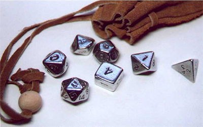
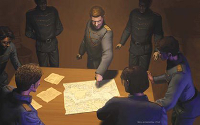
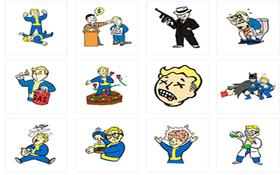
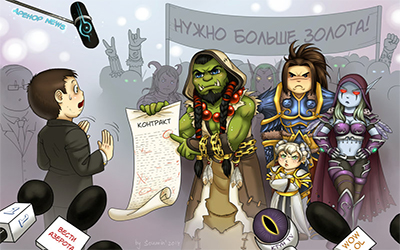

Преимущество.
«Преимущество» - это полезная черта, дающая вам ментальное, физическое или социальное «превосходство» над персонажем с такими же характеристиками. Каждое преимущество имеет свою цену в очках персонажа. Для одних преимуществ она постоянна, для других зависит от их «уровня». Вы можете начать игру со множеством преимуществ, если способны их приобрести - хотя некоторые могут быть запрещены определенным видам персонажей. Магия и высокие технологии зачастую тоже могут дать преимущество.
Читать больше

Недостатки.
«Недостаток» - это проблема или дефект, который делает вас менее способным, чем это позволяют ваши атрибуты, преимущества и умения. Вероятно, вы удивитесь, «Зачем же давать своему персонажу недостатки?» Для этого есть две веские причины: 1.Таким образом, недостаток дает вам дополнительные очки, которые позволят улучшить другие качества персонажа. Обязательно полностью прочитайте описание недостатка, чтобы знать, что вы берете. 2. Пара изъянов сделает вашего персонажа более интересным и реальным и добавит удовольствия от отыгрыша!
Читать больше

Умения.
Умение – это определенный вид знаний; например, дзюдо, ядерная физика, владение мечом, механика, смертельные заклинания – все это умения. Каждое умения отдельно и существует само по себе, но некоторые умения помогают изучить другие. Как и в реальной жизни, вы начинаете с некоторыми умениями и можете изучить больше, если потратите время на тренировку.
Читать больше

Снаряжение.
Пришло время решать, какой собственностью вы владеете! Можете пропустить этот раздел, если у вас ни гроша за душой или вы планируете покупать снаряжение по мере необходимости... в остальных случаях вам нужно определиться с имуществом и его стоимостью. Воину важно знать, насколько у него мощное оружие и хорошая броня. А если вы планируете сражаться или путешествовать, нужно подумать о весе и способе переноски вещей.
Читать больше